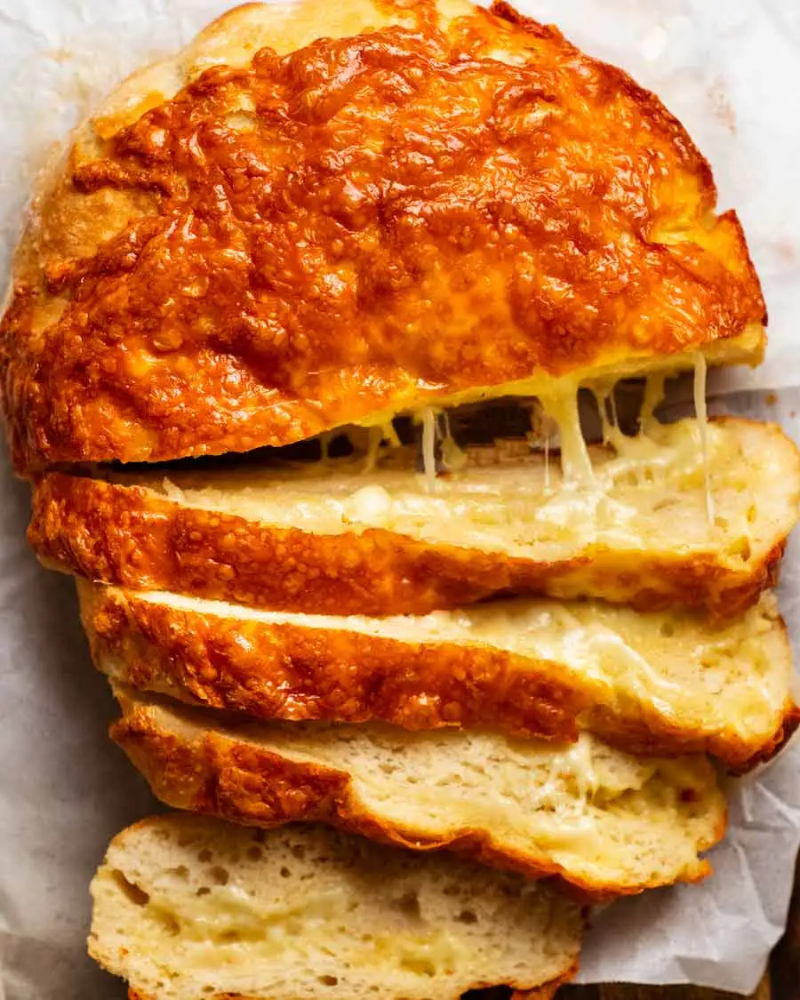

Odin's Ambrosial Cheese Bread
From the ovens of the cosmic kitchen, warm loaves of golden bread emerge,
symbolizing the bounty of the earth.
Paired with hearty wedges of aged cheese, these offerings tell the tale of
sustenance and wisdom, for in the simplest of foods,
the essence of life and knowledge is found. A feast worthy of the Allfather's
table, where every bite whispers the secrets of the cosmos.
Ingredients
- Golden Flour, milled beneath the roots of Yggdrasil, the World Tree
- Heavenly Milk from the Cosmic Cows of Asgard
- Aged Cheese, crafted in the Dwarven Halls of Svartálfaheim
- Whispers of Midgardian Herbs, gifted by the Earth herself
- Forgotten Grains from the Harvest of Bilskirnir, Thor's Hall
- A pinch of Frigg's Love, the goddess of hearth and home
- Mjölnir's Magic Yeast, awakened by Thor's mighty hammer
- Odin's Wisdom, to season and guide the dough
Steps
- Mix Golden Flour and Heavenly Milk.
- Add Aged Cheese, Midgardian Herbs, and Forgotten Grains.
- Blend with a pinch of Frigg's Love.
- Activate with Mjölnir's Magic Yeast.
- Shape and rise with Odin's Wisdom.
- Bake until golden and fragrant.
- Serve a divine feast of legends.